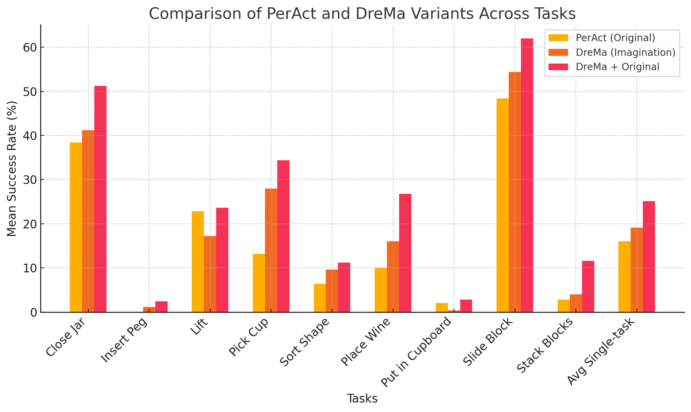

A world model provides an agent with a representation of its environment, enabling it to predict the causal consequences of its actions. Current world models typically cannot directly and explicitly imitate the actual environment in front of a robot, often resulting in unrealistic behaviors and hallucinations that make them unsuitable for real-world applications. In this paper, we introduce a new paradigm for constructing world models that are explicit representations of the real world and its dynamics. By integrating cutting-edge advances in real-time photorealism with Gaussian Splatting and physics simulators, we propose the first compositional manipulation world model, which we call DreMa. DreMa replicates the observed world and its dynamics, allowing it to imagine novel configurations of objects and predict the future consequences of robot actions. We leverage this capability to generate new data for imitation learning by applying equivariant transformations to a small set of demonstrations. Our evaluations across various settings demonstrate significant improvements in both accuracy and robustness by incrementing actions and object distributions, reducing the data needed to learn a policy and improving the generalization of the agents. As a highlight, we show that a real Franka Emika Panda robot, powered by DreMa ’s imagination, can successfully learn novel physical tasks from just a single example per task variation (one-shot policy learning).
DreMa reconstructs 3D scenes using object-centric Gaussian Splatting, capturing high-resolution, manipulable representations of environments. These representations are then embedded into a physics simulator (e.g., PyBullet), allowing robots to interact with the imagined world in a physically constrained yet flexible manner. Foundational models further refine the compositional properties of the scene, enabling controlled object manipulations and scene augmentations.
 One key application of DreMa is in imitation learning, where robots learn from demonstrations. By leveraging equivariant transformations (such as roto-translation of objects and actions), DreMa generates new high-quality demonstrations that enhance policy learning without requiring extensive real-world data collection. This improves generalization while reducing dependence on exhaustive demonstrations.
DreMa enables the replay of demonstrations within the simulation framework, leveraging Gaussian Splatting to recreate past observations with high fidelity. This capability allows robots to revisit previous actions without requiring new physical demonstrations.
Beyond replaying existing demonstrations, DreMa utilizes simulation to generate novel configurations of the environment. By systematically altering object positions and robot actions, it creates diverse training scenarios that help robots generalize their learned behaviors to unseen situations. This capability resemble human imagination capabilities , allowing it to explore variations that were not explicitly demonstrated, effectively enhancing adaptability and robustness in new tasks.